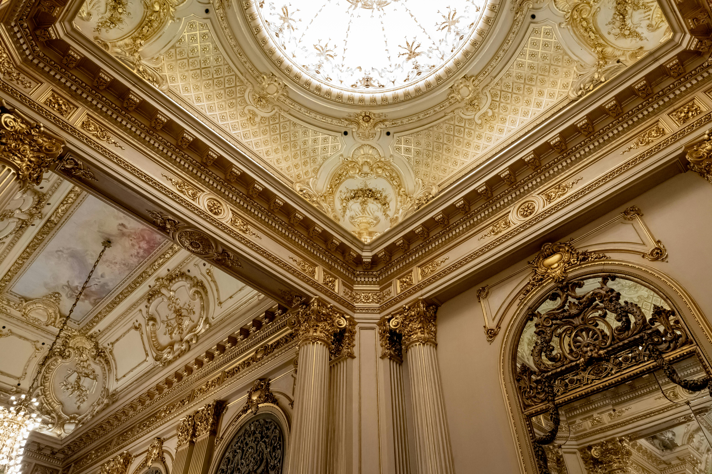

Teatro Colón
O Teatro Colón é um dos teatros de ópera mais importantes do mundo. Inaugurado em 1908, é conhecido por sua arquitetura imponente e sua acústica perfeita. Grandes nomes da música clássica e da ópera, como Luciano Pavarotti e Maria Callas, já se apresentaram neste palco. Além dos espetáculos, o teatro oferece visitas guiadas que permitem conhecer seus bastidores, salões luxuosos e a impressionante sala principal com seus vitrais e mármores. Uma verdadeira joia da cultura argentina!
História do Teatro
O projeto do Teatro Colón levou mais de vinte anos para ser concluído. Ao longo de sua construção, diferentes arquitetos europeus deixaram sua marca, o que resultou em um edifício de estilo eclético, que mistura influências francesas, italianas e alemãs. Ao entrar, os visitantes se deparam com um ambiente majestoso: mármores importados, vitrais belgas, escadarias monumentais e salões decorados com muito dourado e veludo. Tudo nesse lugar transmite elegância e tradição.
Conclusão
Por tudo isso, o Teatro Colón não é apenas um lugar para assistir a uma ópera ou um concerto. É um espaço onde a arte encontra a história, onde a tradição se mistura com a modernidade, e onde cada visita deixa uma lembrança profunda. Conhecê-lo é entender um pouco mais da alma de Buenos Aires — uma cidade que respira cultura em cada esquina.